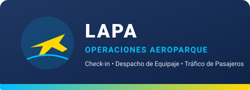
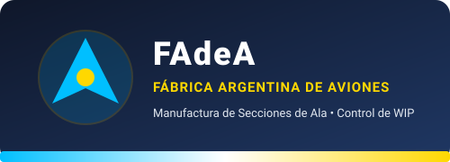
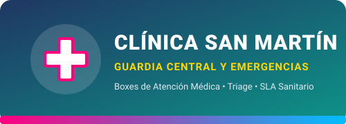

Universidad Católica de Santiago del Estero
Facultad de Ciencias de la Salud y Tecnologías de la Información • Ingeniería en Informática • Modelos y Simulación (2026)
Para aprobar el Trabajo Final Integrador, cada grupo/estudiante deberá presentar y defender el día de la demostración (Demo) los siguientes cuatro artefactos obligatorios:
Informe técnico profesional con la formulación del problema, identificación del tipo de sistema y sus 5 elementos (Entidades, Atributos, Actividades, Estados y Eventos), desarrollo matemático paso a paso del modelo de Teoría de Colas, contraste crítico entre resultados analíticos y simulados, análisis de sensibilidad y recomendación gerencial fundamentada.
Planilla de cálculo estructurada con los parámetros de entrada, el cálculo exacto de las fórmulas teóricas ($\rho, P_0, L_q, L, W_q, W$) y la recolección de datos de la simulación de 120 horas efectivas de recolección simuladas ejecutada en FlexSim para cada escenario y su contrastación con la teoría.
Modelos de simulación 3D construidos y verificados en FlexSim tanto para el escenario base (diagnóstico actual) como para cada una de las alternativas de mejora o rediseño planteadas en los incisos del caso asignado, con sus respectivos Dashboards de indicadores operativos.
Presentación ejecutiva de soporte para la defensa oral y la demostración en vivo (Demo). Debe sintetizar el problema, los supuestos de modelado, la comparativa de escenarios en tablas/gráficos y la decisión de ingeniería recomendada ante la gerencia.
Seleccione a continuación el caso de estudio asignado por la cátedra para acceder al enunciado completo, la narrativa del problema, los parámetros operativos y las consignas específicas de simulación:

Caso hipotético inspirado en operaciones aeroportuarias. Evaluación de demoras en mostradores de registro de pasajeros en hora pico. Comparación entre fila única ($M/M/4$) y segmentación de colas por tipo de trámite (problemas de reserva, despacho de bodega y equipaje de cabina), más diseño de capacidad de butacas mediante percentiles.

Red de colas en serie (tándem) para el prensado de láminas metálicas de secciones de ala ($c=10$ prensas) y su posterior estación de inspección aeronáutica. Optimización económica del costo total por hora incluyendo el capital inmovilizado en Inventario en Proceso (WIP).

Dimensionamiento de boxes médicos de guardia de emergencias ante auditorías sanitarias. Deducción de la dotación actual a partir del porcentaje de espera, cumplimiento de SLA regulatorio ($95\%$ con espera menor o igual que $3\text{ min}$) y evaluación de Tele-Triage vs. Historia Clínica con IA.
Congestión de camiones portacontenedores en la playa de transferencia marítima. Estimación de grúas pórtico activas, dimensionamiento para cumplir el SLA de la Autoridad Portuaria ($95\%$ con espera menor o igual que $6\text{ min}$) y contraste entre turnos Smart-Gate y modernización de spreaders.
MS2026_TF_Grupo[X]_Informe.docx (Informe técnico y administrativo completo).MS2026_TF_Grupo[X]_Datos.xlsx (Planilla estructurada con memoria de cálculo y recolección estadística).MS2026_TF_Grupo[X]_ModelosFlexSim.zip o archivos .fsm ejecutables individuales.MS2026_TF_Grupo[X]_Presentacion.pptx o .pdf (Diapositivas de soporte de la defensa oral)..fsm abran y ejecuten sin errores en FlexSim. Archivos corruptos o que no ejecuten invalidan la parte práctica de simulación.La evaluación del Trabajo Final Integrador contempla la coherencia metodológica entre el análisis en Word, el procesamiento estadístico en Excel, el modelo ejecutable en FlexSim y la claridad expositiva en la Presentación del día de la Demo:
| Criterio de Evaluación | Artefacto Asociado | Desempeño Esperado (Nivel Avanzado / Competente) | Ponderación |
|---|---|---|---|
| 1. Formulación del problema y relevamiento de datos | Documento Word (.docx) + Planilla Excel (.xlsx) | Identificación exhaustiva de variables de entrada ($\lambda, \mu, c$), unidades de tiempo homogéneas y supuestos estocásticos del sistema. | 15% |
| 2. Construcción del modelo conceptual | Documento Word (.docx) | Abstracción precisa del sistema real definiendo Entidades, Atributos, Actividades, Estados, Eventos y Notación de Kendall. | 15% |
| 3. Implementación computacional del modelo | Modelo FlexSim (.fsm) | Modelo robusto en FlexSim con lógica consistente, objetos bien configurados (Exponential con Scale = 1/Tasa, ruteo Round Robin if Available) y ejecución estable. |
20% |
| 4. Verificación, validación y recolección estadística | Planilla Excel (.xlsx) + Documento Word (.docx) | Registro de la simulación de 120 horas efectivas en FlexSim y procesamiento en Excel, cálculo y comparación de los indicadores operativos ($\rho, L_q, L, W_q, W$) y validación frente a las fórmulas teóricas de colas. | 20% |
| 5. Análisis de resultados y sensibilidad | Planilla Excel (.xlsx) + Documento Word (.docx) | Interpretación profunda de indicadores ($\rho, P_0, L_q, L, W_q, W$, niveles de servicio) y comparación rigurosa entre escenarios. | 15% |
| 6. Conclusiones y toma de decisiones | Documento Word (.docx) + Presentación Demo | Recomendaciones estratégicas, técnicas y económicas sólidamente respaldadas por la evidencia cuantitativa del modelo. | 10% |
| 7. Defensa oral, Presentación y Demo en vivo | Presentación (.pptx/PDF) + Demo FlexSim | Claridad expositiva, dominio técnico ante preguntas de la cátedra y demostración fluida del modelo el día de la Demo. | 5% |